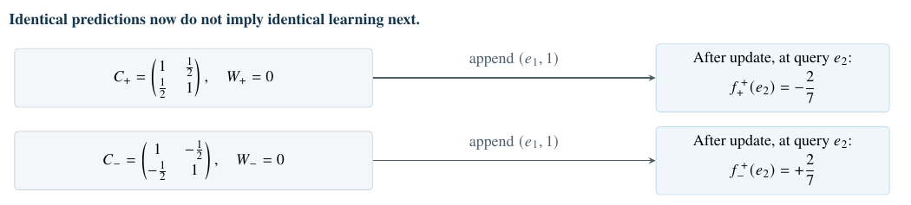
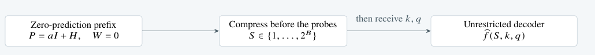

Matching every current prediction does not guarantee the ability to learn from future observations. We characterize the minimum memory required for continued learning, proving when finite-dimensional states exist and quantifying the information hidden by present predictions.
Machine Learning
Downloadable summary PDF: open PDF.

Exact ridge example. With \(d=2\), \(p=1\) and \(\lambda=1/4\), both zero-label histories have the same length, diagonal evidence and current predictions. Merging them forces average squared error at least \(4/49\) after the common update, at query \(e_2\).
Exact continuous-state requirements \(\displaystyle s_d=\frac{d(d+1)}2,\qquad r_D(d)=\binom{d+D}{D}-1\)
| Computation | Full state requirement | Hidden at identical predictions |
|---|---|---|
| Ridge, \(d\) features and \(p\) outputs | \(dp+s_d\) | \(s_d\) on zero-label prefixes |
| Degree-\(D\) residual loss | \(r_D(d)\) | \(r_D(d)-d\) at any fixed optimum |
| Bounded scalar logistic, \(2N\) paired samples | Unbounded with \(N\) | At least \(N\) despite optimum zero |
| Softmax, \(N\) distinct real keys | \(N(d+p)\) | \(Nd\) on zero-valued prefixes |
The last column concerns summaries on the stated prefix families, not smaller global recurrences. The softmax count is at fixed length \(N\). These are real-coordinate bounds for continuous encoders; finite bits are treated separately.
For \(x_i\in\R^d\), \(y_i\in\R^p\) and \(\lambda>0\), cumulative ridge stores \[C=\lambda I+\sum_i x_ix_i^\top,\qquad M=\sum_i y_ix_i^\top, \qquad W=MC^{-1}.\] The current readout \(q\mapsto Wq\) needs exactly \(dp\) coordinates. The next observation \((k,y)\) gives \[W^+=W+(y-Wk)\frac{k^\top P}{1+k^\top Pk}, \qquad P=C^{-1}.\] The same prediction error is transformed differently by different past designs. At zero labels, \(W=0\) for every \(C\), but all \(s_d\) independent design coordinates remain necessary for exact continuation.
This is a lower bound against arbitrary continuous nonlinear summaries, not merely a count of matrix entries. Native updates reveal the gain \(Pk/(1+k^\top Pk)\), whose inverse recovers \(Pk\); basis keys identify \(P\). An open \((dp+s_d)\)-dimensional family is reachable with only \(d\) observations. Invariance of domain then forces the state dimension, while classical recursive least squares attains it. (Theorem 1)
Unit-normalizing every key does not remove the quadratic requirement. At known length \(N\ge d\ge2\), the minimum is \(dp+s_d-1\): only the known trace coordinate disappears.
Every history-dependent auxiliary array counts toward this budget; fixed parameters and a known clock do not. The decoder may be arbitrary. Replay or extra evidence-carrying channels preserve, rather than circumvent, the information the update requires.
Consider ordinary, unweighted residual observations and \[F_h(w)=R(w)+\sum_{(x,y)\in h}\rho(x^\top w-y).\] Here \(R\) is fixed, smooth and strongly convex; \(\rho\) is smooth, convex and nonconstant; features and labels are unrestricted real vectors and scalars. The sufficient object is the whole accumulated gradient function \[G_h(w)=\sum_{(x,y)\in h}x\rho'(x^\top w-y),\] not its value at the current optimum. Two histories agree after every one-example continuation exactly when their \(G_h\) functions agree. This equivalence is preserved by adding observations, so it supports every finite continuation.
Writing \(r=\dim\Span\{w\mapsto x\rho'(x^\top w-y)\}\), the exact minimum is \(r\). It is finite if and only if \(\rho\) is polynomial; degree \(D\ge1\) gives the table’s \(r_D(d)\), attained by additive polynomial coefficients. The proof constructs open families by varying the observations themselves—no sample-weight input is needed. (Theorems 2–3)
The current optimum costs only \(d\) coordinates. Fixing it removes exactly \(d\) profile dimensions, leaving \(r_D(d)-d\) invisible but continuation-relevant coordinates; for nonpolynomial losses this requirement is unbounded. A Hessian is therefore not a universal finite-state completion of a predictor.
The unrestricted feature domain matters: with scalar feature fixed at \(x=1\), exponential loss instead closes in one coordinate, \(\sum_i e^{-y_i}\).
For scalar logistic regression with regularization \(\lambda w^2/2\), take the \(2N\) observations \((a_i,+1)\) and \((a_i,-1)\), where \(1<a_1<\cdots<a_N<2\). Every history has optimum zero, but \[F_a'(w)=\lambda w+\sum_{i=1}^N a_i\tanh(a_iw/2).\] The curve of updated optima \(b\mapsto w_a(b)\), obtained by appending \((b,+1)\) with arbitrarily small positive \(b\), identifies every past scale \(a_i\). Thus any continuous exact summary requires at least \(N\) coordinates even though the parameter itself is scalar and all current predictions coincide. (Theorem 4)
The obstruction survives fixing any finite collection of local derivatives. For \(N>K\), local \((N-K)\)-dimensional families share all objective derivatives of orders \(0,\ldots,2K+1\) at zero, yet remain distinguishable by those bounded one-example continuations. Fixing the first \(K\) power sums \(\sum_i a_i^{2j}\) fixes the jet; a Vandermonde argument leaves \(N-K\) free dimensions. (Theorem 5)
This is exact identifiability, not an \(N\)-independent numerical error floor. The next result establishes a separate, quantitative obstruction on well-conditioned ridge histories.
Allow any measurable, possibly randomized encoder with at most \(2^B\) states and an unrestricted decoder. For \(d\ge2\), use zero-label ridge prefixes with \(P=C^{-1}=aI+H\), where \(H\) is uniform on \[\mathcal K_d=\{H\in\Sym_d:\ \norm{H}_F\le r\sqrt d, \ \norm{H}_{\mathrm{op}}\le18r\}.\] Choose \(a>18r>0\) and \(b=a+18r<1/\lambda\). The family has a uniformly bounded condition number and identical current predictor \(W=0\).
After compression, append \((k,1)\) and query \(q\), with \(k,q\) independent uniform unit vectors, independent of the prefix. The target and optimal squared risk are \[f_P(k,q)=\frac{q^\top Pk}{1+k^\top Pk},\qquad \mathcal R_B=\inf_{S,\widehat f}\E(\widehat f-f_P)^2.\] The matching law below has the quadratic exponent \(s_d\), even for arbitrary nonlinear decoders, private randomization and independent shared randomness. The proof compares random-probe response distance with Frobenius matrix distance, then reduces decoder risk to posterior matrix variance. A covering quantizer attains the exponent. (Theorem 6)
The upper bound is an offline prefix quantizer; efficient streaming quantization is not asserted.
A matching finite-bit error law for one ordinary update (Theorem 6) \[\frac{r^2}{4d(1+b)^4}\,2^{-2B/s_d} \;\le\;\mathcal R_B\;\le\; \frac{16(1+b)^2r^2}{d}\,2^{-2B/s_d}, \qquad s_d=\frac{d(d+1)}2.\]

For normalized error \(\varepsilon_B=d\mathcal R_B/r^2\), a sufficiently small fixed tolerance already costs \(\Omega(d^2)\) bits; achieving tolerance \(\varepsilon\) costs \(\Theta(s_d\log(1/\varepsilon))\) as \(\varepsilon\downarrow0\). The raw-risk factor \(1/d\) is not discarded.
For a strictly positive kernel continuous in the key, and values \(v_i\in\R^p\), normalized attention is \[Z_h(q)=\sum_i t_i\kappa(q,k_i),\qquad B_h(q)=\sum_i t_i\kappa(q,k_i)v_i,\qquad f_h=B_h/Z_h.\] One-token responses identify \((B_h,Z_h)\), not merely their ratio. At a fixed appended key, compare the two alternative values \(0\) and \(e_1\). Their output difference reveals the denominator; either output then reveals the numerator. Zero old values hide all the normalization mass from present readouts. (Proposition 7)
If \(r_\kappa=\dim\Span\{\kappa(\cdot,k)\}\) and positive weights \(t_i\) are inputs, the exact minimum is \(r_\kappa(p+1)\) when finite; otherwise no fixed finite state suffices. For unweighted softmax, \(\kappa(q,k)=e^{q^\top k}\), distinct real keys and an open query domain give the exact \(N(d+p)\) count in the table. Even at zero values, all \(Nd\) key coordinates remain necessary. (Theorem 8)
Approximation should likewise control both statistics. If \(|\widehat Z-Z|\le\delta Z\), \(\norm{\widehat B-B}\le\eta Z\), \(0\le\delta<1\), and all value norms are at most \(V\), then after a common continuation of kernel mass \(A\), \[\norm{\widehat f^{\,+}-f^+}\le \frac{\theta(\eta+\delta V)}{1-\theta\delta}, \qquad \theta=\frac{Z}{Z+A}\le1.\] Old-ratio error alone gives no such guarantee. (Proposition 10)
Let \(F\) be \(\lambda\)-strongly convex, \(U\) any common differentiable convex continuation, and \(w^+=\argmin(F+U)\). Suppose a domain \(\Omega\) contains \(w^+\) and the returned point \(\widehat w\), with \[\sup_{w\in\Omega}\norm{\widehat G(w)-\nabla F(w)}\le\delta, \qquad \norm{\widehat G(\widehat w)+\nabla U(\widehat w)}\le\eta.\] Then strong convexity gives the continuation guarantee \[\norm{\widehat w-w^+}\le\frac{\delta+\eta}{\lambda}.\] The approximation \(\widehat G\) need not itself be a gradient. Uniform profile control and a small residual, rather than a Taylor jet at the old optimum alone, certify the returned point. (Proposition 9)
The operator appendices develop Complete Attention, with positive effects summing to identity, and distinguish present-response coordinates from reusable evidence. In information-weighted fusion, fixing every normalized gain at \(W_i=\beta_i I\), with \(\beta_i>0\) and \(\sum_i\beta_i=1\), still leaves an arbitrary total precision \(\Pi\succ0\) invisible. A new unit-precision observation gives \((\Pi+I)^{-1}y\), requiring exactly \(s_d\) hidden coordinates on this zero-estimate family. (Proposition 28)
Implication for memory design. Equal current predictions are not a certificate of equal retained learning. A continuation-aware test fixes present readouts, varies hidden evidence, appends the same observation and measures the new response. The results concern the stated computations and precision models, not trained-model gains or a universal failure of fixed-memory architectures.
Source: the author’s manuscript, Prediction Is Not a Sufficient Memory State, Sections 2–8 and Appendices H–M. Result numbers refer to that manuscript.
At y = 0, both predictors are zero everywhere. The evidence ellipses are already different.